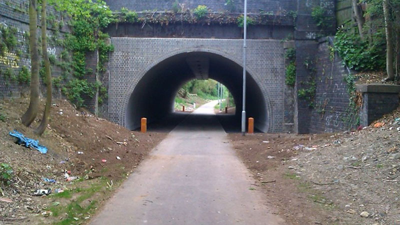
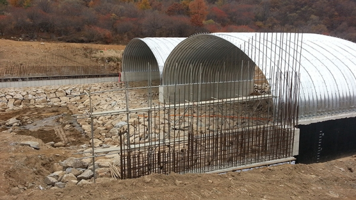

REXSTEEL / ENGINEERING & MANUFACTURING
파형강판 · 파형강관 · 원더아치
구조설계부터 제조와 시공 지원까지. 렉스틸은 인프라와 방호시설을 위한 파형강 구조 솔루션을 제공합니다.
렉스틸의 사업
인프라에서 방호시설까지
현장의 조건에 맞는 파형강 구조 기술.
제품과 설계, 공급을 함께 검토합니다.


NET · 혁신제품기능성 전착도장
기능성 전착도장
파형강판
전해 에칭부터 지르코늄 피막·전착도장까지. 밀착성, 마모, 내후성을 시험으로 확인한 표면 보호 기술입니다.
0등급노출 후 밀착성500시간중성염수분무 이상 없음1,000시간UV 촉진내후성 이상 없음
발표자료의 개별 시료·시험조건 기준 · 상세페이지에 조건과 출처 수록
전착도장 기술 자세히 →카탈로그 최종본 준비 중

시공사례
현장에 남은 기술
생태통로와 교량 등 실제 현장에 적용된 파형강판 구조물을 소개합니다.





CORRA / BIM ENGINEERING파형강판의 BIM,
파형강판의 BIM,
CORRA로 연결합니다.
자체 개발 BIM 설계 프로그램 CORRA로 3D 형상·구조검토·도면·수량을 연결합니다. 파형강관은 REX-CSP로 설계조건 검토와 계산서·적용범위표 작성을 지원합니다.

DOWNLOADS
필요한 자료를 바로
제품과 인증, 설계자료를 한곳에서 확인하세요.
견적 문의 전, 이것만 알려주세요.
모든 조건이 정해지지 않아도 문의하실 수 있습니다.
- 프로젝트 위치와 적용 용도
- 폭·높이·길이 또는 관경
- 복토·하중·지반 등 알려진 조건
- 요청 납기와 도면·현장사진